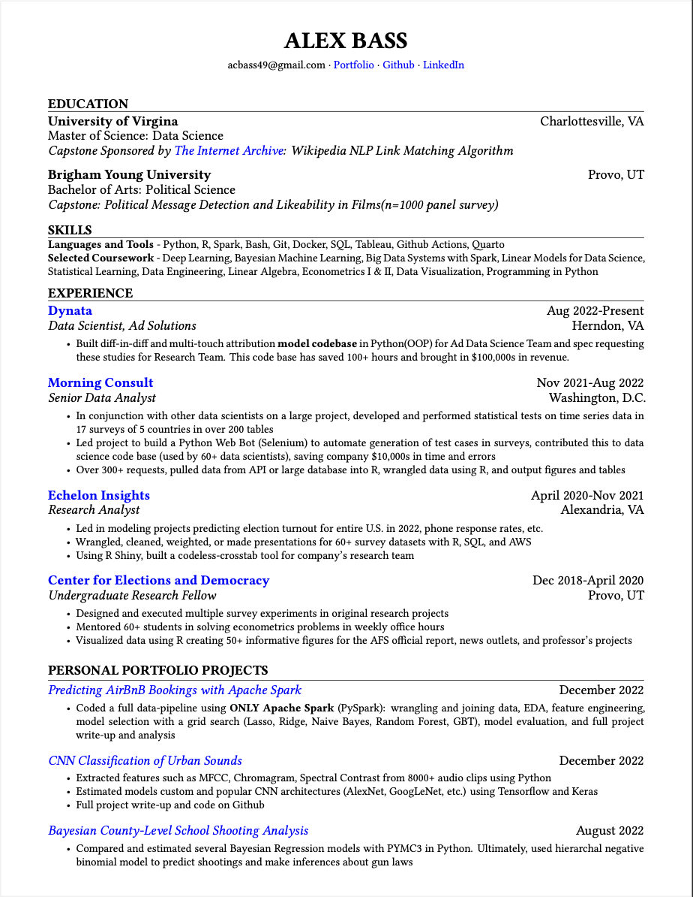

Simple Resume Template with Quarto and LaTeX

Introduction
I made my first real resume about 7ish years ago. I used the templates they have at BYU, my alma mater. They are simple, clean, and I love them to this day!
However, I wanted a way to help streamline my resume. It was getting tedious fidgeting around in the original word doc, exporting as a pdf, and then updating in all the other places I kept it. Additionally, I wanted more control over my resume than Microsoft Word was giving me and a more programmatic approach. All of these thoughts led me to Posit’s relatively new Quarto. Quarto is a flexible platform that can generate scientific reports and publish in a variety of formats (you can actually make websites with it too). So, I decided to give it a spin.
Implementation
I knew that it would likely be more work up front to create the bare bones structure, but less work on the backend when I would just add a thing or two. And, my hope was that other people interested in this format could use it as well in a few minutes without all the upfront work.
You can render the document side-by-side as you are writing it up which I found very helpful in whatever program you use to edit it.

You can also render the pdf from the .qmd from the code below.
#In the terminal where the .qmd file is kept, run below to generate pdf:
quarto render resume_alex.qmd --to pdfTurned out because I was most interested in the pdf export, I ended up using mostly LaTeX and only some plain Markdown in my Quarto document. Though I haven’t experimented with exporting to html, I noticed that I wasn’t able to export to word when using custom LaTeX. My template can only be fully rendered in pdf form which is fine for my interests. But, for those interested in a Microsoft Word or html output, my template may not work for you.
Finished product below… (also check out my cv tab on this website for the pdf; below is just a screenshot)

How did it turn out? Do you like my resume?
Overall, I am happy how it turned out and happy to save some time. Feel free to clone/fork the repository where I have my resume for your personal use.
If you would like to clone the repo, copy the code below in the terminal. Then just update the files to have your resume information!
git clone https://github.com/acbass49/CV_Quarto.gitTips if you try it
- I put comments throughout the .qmd document outlining where all the parts of the resume are, so should be able to update text and copy and paste sections as necessary.
- Like I mentioned above, most of this is built with LaTeX, so if you want to further customize, you will want to be googling how to do something in LaTeX. The only part that is in Markdown are the bulleted lists.
- I would recommend using RStudio as the tool for working with Quarto (same company built both), but as I use VScode a lot these days, I figured I would give Quarto’s VScode plug-in a try. Overall, I really liked the plug-in. Notably, you can render the .qmd document (as docx, pdf, html) in the window next to you which was very helpful. I believe this is the same for RStudio as well.
- As a bonus, in the repository I have a shell script where you can see what actions I take to upload the new resume to my personal system and blog, and update the repositories.
Feel free to message me with any questions